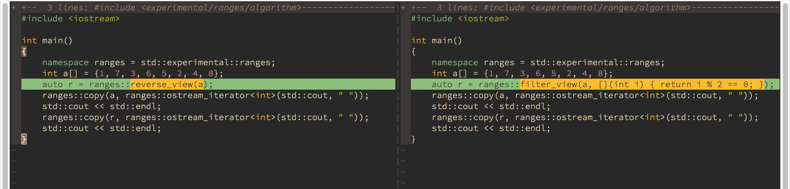
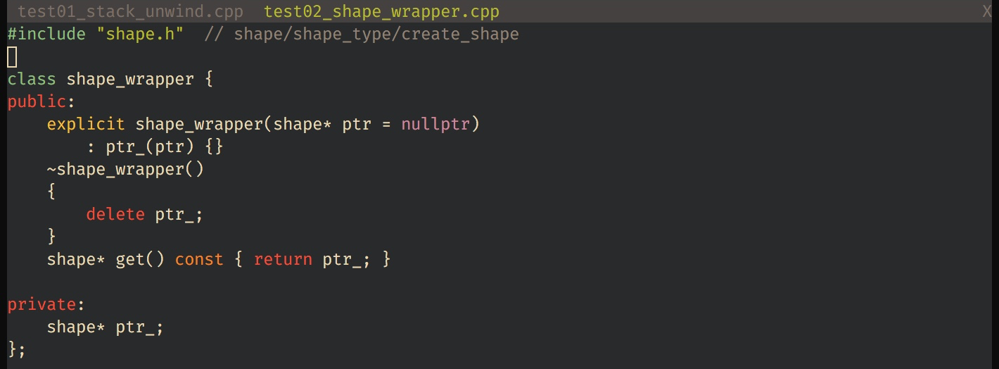
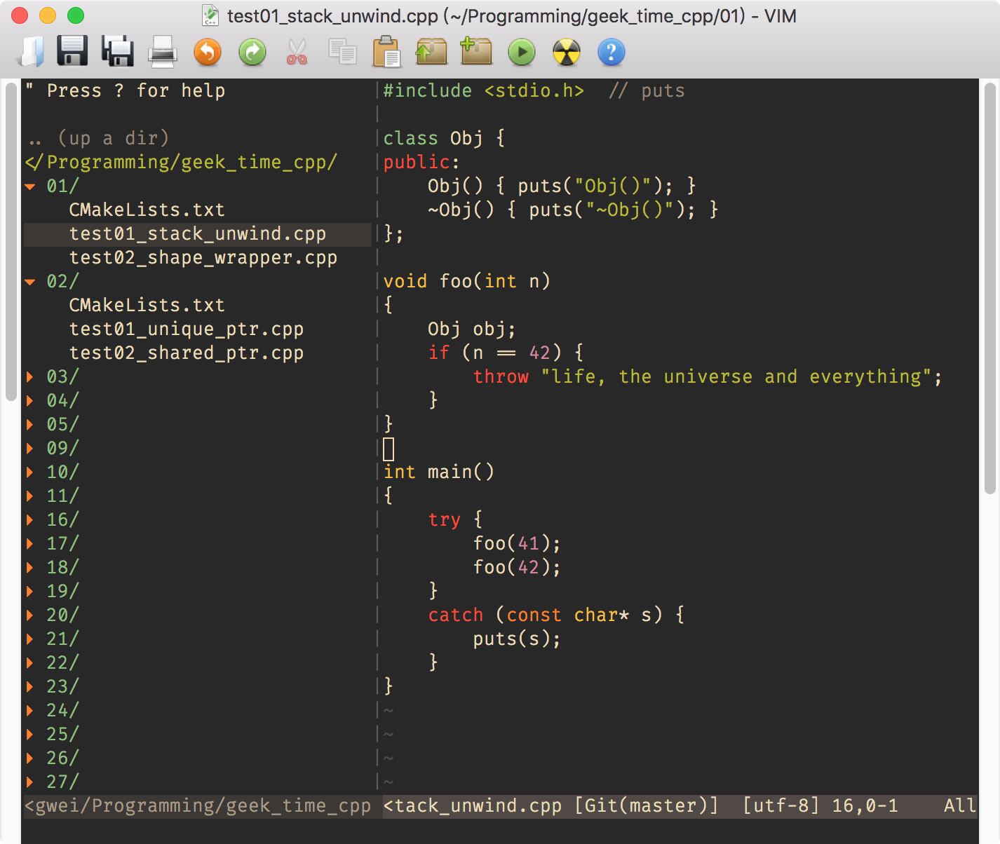
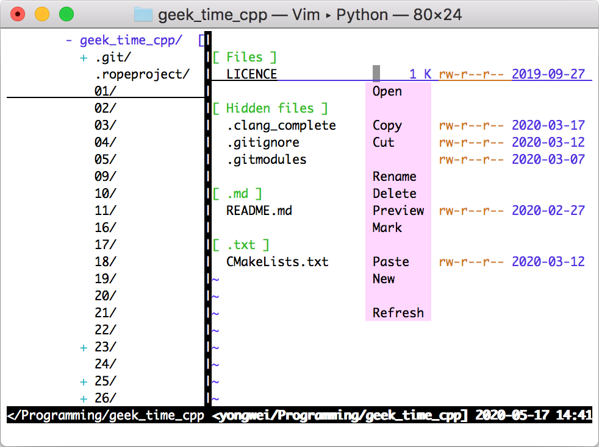

- 00 导读 池建强：Vim 就是四个字“唯快不破”.md
- 00 开篇词 我们为什么要学 Vim？.md
- 01 各平台下的 Vim 安装方法：上路前准备好你的宝马.md
- 02 基本概念和基础命令：应对简单的编辑任务.md
- 03 更多常用命令：应对稍复杂的编辑任务.md
- 04 初步定制：让你的 Vim 更顺手.md
- 05 多文件打开与缓冲区：复制粘贴的正确姿势.md
- 06 窗口和标签页：修改、对比多个文件的正确姿势.md
- 07 正则表达式：实现文件内容的搜索和替换.md
- 08 基本编程支持：规避、解决编程时的常见问题.md
- 09 七大常用技巧：让编辑效率再上一个台阶.md
- 10 代码重构实验：在实战中提高编辑熟练度.md
- 11 文本的细节：关于字符、编码、行你所需要知道的一切.md
- 12 语法加亮和配色方案：颜即正义.md
- 13 YouCompleteMe：Vim 里的自动完成.md
- 14 Vim 脚本简介：开始你的深度定制.md
- 15 插件荟萃：不可或缺的插件.md
- 16 终端和 GDB 支持：不离开 Vim 完成开发任务.md
- 拓展1 纯文本编辑：使用 Vim 书写中英文文档.md
- 拓展2 C 程序员的 Vim 工作环境：C 代码的搜索、提示和自动完成.md
- 拓展3 Python 程序员的 Vim 工作环境：完整的 Python 开发环境.md
- 拓展4 插件样例分析：自己动手改进插件.md
- 拓展5 其他插件和技巧：吴咏炜的箱底私藏.md
- 结束语 Vim 森林探秘，一切才刚刚开始.md
06 窗口和标签页：修改、对比多个文件的正确姿势
你好，我是吴咏炜。
上一讲我们讨论了多文件的编辑。不过，迄今为止，我们即使编辑多个文件，也是在单个窗口里进行的。这样做的局限在于，我们既不能同时修改两个文件，也不能在单个 Vim 会话里对比显示两个文件。当然了，在两个 Vim 会话里倒是可以做到，但有很多不足之处，其中之一就是容易出现“已经存在交换文件”这样的冲突。
所以，这一讲我们就来讨论一下如何利用多窗口、多标签页编辑来实现这些功能。
多窗口编辑
Vim 有窗口的概念。事实上，如果你使用过 Vim 的帮助功能的话，那你就已经见过 Vim 的多窗口界面了。在那种情况下，Vim 自动打开了一个水平分割的帮助窗口。
那如果我们想要自己同时查看、编辑多个文件呢？最基本的命令就是 :split（缩写 :sp）了。这个命令后面如果有文件名，表示分割窗口并打开指定的文件；如果没有文件名，那就表示仅仅把当前窗口分割开，当前编辑的文件在两个窗口里都显示。跟显示帮助文件一样，:split 默认使用水平分割的方式。
既然我说了“水平分割”，聪明如你，一定想到了还有竖直分割。
确实如此。由于 Vim 经常是在终端窗口里打开，而终端宽度常常不能允许在竖直分割时显示两个文件，所以 Vim 默认分割是水平方式。竖直分割要求屏幕比较宽，但如果你想对比两个文件时，竖直分割就会更方便了。
我们可以在会产生分割的命令（如 help 和 split）之前加上 vertical（缩写 vert），来进行竖直分割。对于最常见的竖直分割操作，我们则可以直接写成 :vsplit（缩写 :vs）。
下面的动画展示了我们进行一次竖直分割后，再进行水平分割的过程：
多窗口编辑是一个比较适宜使用鼠标的情况。你可以使用鼠标来激活想要使用的窗口，也可以使用鼠标来拖拉窗口的大小——只要启用了鼠标支持，终端窗口（包括远程连接的 mintty、PuTTY 等）里的 Vim 的窗口分割线也是可以拖动的（上面动画里的分割线拖动就是在一个终端窗口里）。
当然，作为 Vim 用户，基本的键盘使用肯定是少不了的：
<C-W>加方向键（h、j、k、l、<Left>等等）可以在窗口之间跳转<C-W>w跳转到下一个（往右和往下）窗口，如果已经是右下角的窗口，则跳转到左上角的窗口<C-W>W跳转到上一个（往左和往上）窗口，如果已经是左上角的窗口，则跳转到右下角的窗口<C-W>n或:new打开一个新窗口<C-W>c或:close关闭当前窗口；当前窗口如果已经是最后一个则无效<C-W>q或:quit退出当前窗口，当最后一个窗口退出时则退出 Vim<C-W>o或:only只保留当前窗口，关闭其他所有窗口<C-W>s和:split作用相同，把当前窗口横向一分为二<C-W>v和:vsplit作用相同，把当前窗口纵向一分为二<C-W>=使得所有窗口大小相同（当调整过终端或图形界面 Vim 的窗口大小后特别有用）<C-W>_设置窗口高度，命令前的数字表示高度行数，默认为纵向占满（想专心编辑某个文件时很有用）<C-W>|设置窗口宽度，命令前的数字表示宽度列数，默认为横向占满<C-W>+增加窗口的高度，命令前的数字表示需要增加的行数，默认为 1<C-W>-减少窗口的高度，命令前的数字表示需要减少的行数，默认为 1<C-W>>增加窗口的宽度，命令前的数字表示需要增加的列数，默认为 1<C-W><lt>（提醒，我们用<lt>表示“<”键）减少窗口的宽度，命令前的数字表示需要增加的列数，默认为 1
由于切换窗口是一个非常常见的操作，我通常会映射一下快捷键。为了跟一般的图形界面程序一致，我使用了 Ctrl-Tab 和 Ctrl-Shift-Tab：
nnoremap <C-Tab> <C-W>w
inoremap <C-Tab> <C-O><C-W>w
nnoremap <C-S-Tab> <C-W>W
inoremap <C-S-Tab> <C-O><C-W>W
简单解释一下：nnoremap 命令映射正常模式下的键盘，inoremap 命令映射插入模式下的键盘；正常模式的映射简单直白，应该不需要解释，插入模式的映射使用了临时模式切换键 <C-O>（:help i_CTRL-O），在正常模式下执行相应的窗口命令，然后返回插入模式。使用这样的键盘映射之后，这两个快捷键在正常模式和插入模式下就都可以使用了。
双窗口比较
多窗口编辑中有一个非常有用的使用方式，那就是比较两个文件，Vim 对此也有特殊的支持。使用 vimdiff 或 gvimdiff 命令，后面跟两个文件名，我们就可以对这两个文件进行比较。在比较时，Vim 会自动折叠相同的代码行，并加亮两边文本的不同部分。窗口的滚动也是联动的。一个实际的截图如下所示：

顺便说一句，因为使用双窗口比较功能要求 Vim 的宽度是平时的两倍左右，所以我通常都会对 Vim 窗口使用最大化、拖拉之类的操作。这些操作一般只影响右边的窗口的大小，因此，在放大窗口的操作后，我通常紧跟着就会执行 <C-W>= 来使两个窗口的宽度相同——事实上，我使用 <C-W>= 主要就在这种场合。你也可以试试。
当然了，在 Vim 内部也可以发起这样的比较。你需要做的是打开第一个文件，然后使用命令 :vert diffsplit 第二个文件。这一点只要了解一下就好，毕竟大部分情况下你不需要这样去做。
多标签页编辑
接下来我们继续讨论和多窗口编辑构成互补的另外一种方式，也就是多标签页。
这里我先给你一个结论：单窗口多文件编辑最适合的场景是批量修改具有相似性质的文件，多窗口编辑最适合的场景是需要对多个文件进行对比编辑，而其他的一些同时编辑多个文件的场景，就可以考虑多标签页的编辑方式。
我把多标签页编辑归为“其他”，但仍然还是有其特殊性质的。如果你熟悉现代多标签页的其他编辑器的话，你应该已经熟悉它的基本特性了。我们这儿再温习一下：
- 多标签页编辑允许在编辑器里同时修改多个（未存盘的）文件
- 多标签页编辑一次只展示一个文件
- 通过选择标签页（或使用键盘）可以方便地在多个标签页中进行切换
Vim 中的标签页在图形界面或终端模式下都能支持上面描述的这些特性。

鉴于你在实际使用中对标签页这种方式应当已经相当熟悉，如何使用标签页图形界面我就不讲了。有一点需要注意一下，和某些图形界面应用程序不同，Vim 里标签页可包含多个窗口（一个标签页里默认有一个窗口），而不是窗口可包含多个标签页——这也意味着，在标签页里关闭最后一个窗口就关闭了整个标签页。
此外，Vim 的标签页在纯文本的终端模式里也是可用的。在存在多个标签页的情况下，即使在终端里，你也可以用鼠标点击标签页来进行切换，双击标签栏的空白处添加新标签页，以及点击“X”标记来关闭标签页。
当然，Vim 用户更经常会使用键盘：
- 在已有命令行模式命令前加
tab␣可以在新标签页中展示命令的结果，如:tab help可以在新标签页中打开帮助，:tab split可以在新标签页中打开当前缓冲区 :tabs展示所有标签页的列表:tabnew或:tabedit可以打开一个空白的新标签页，后面有文件名的话则打开该文件:tabclose可以关闭当前标签页（如果标签页里只有一个窗口，使用窗口关闭命令<C-W>c应该更快）:tabnext、gt或<C-PageDown>可以切换到下一个标签页:tabNext、:tabprevious、gT或<C-PageUp>可以切换到上一个标签页:tabfirst或:tabrewind切换到第一个标签页:tablast切换到最后一个标签页
这些命令跟多文件、多缓冲区的命令有诸多相似之处，我就不需要再多加描述了。
如果一开始用多窗口编辑，后来发现不需要一直参照这个文件了，或者屏幕空间不足了，该怎么办呢？Vim 提供了一个命令，可以把当前窗口转变成一个新标签页：按下 <C-W>T 即可（仅当当前屏幕上有多个窗口时有效）。
这讲我们对多窗口和多标签页编辑的基本讨论到这儿就暂告一个段落。不知道你记不记得，上一讲我们说过，如果某个 Vim 会话里不同的窗口（或标签页；以下略）编辑的是同一个文件，它们对应到的也会是同一个缓冲区。这意味着多个窗口编辑同一个文件不会有冲突，同时，如果缓冲区被修改了，但只要当前关闭的窗口不是包含这个缓冲区的唯一窗口，那关闭窗口不会有任何问题，也不会影响文件的状态。在任何一个瞬间，任何一个窗口都指向一个缓冲区，而任何一个缓冲区都属于一个或多个窗口。（例外情况是你使用了一个不那么常用的功能，隐藏缓冲区；这个功能在本课程中不会讨论。）
NERDTree 插件
讨论了多窗口和多标签页之后，我们来看几个利用这些特性的插件。我们讨论的第一个插件就是 NERDTree。
我们上一讲开始提出的问题就是对多个文件进行编辑。对于找文件这件事，NERDTree 就是你知道文件大概在哪里、但不知道文件具体名字时的一个好选择。跟很多 Vim 插件一样，NERDTree 会利用多窗口（少数情况下利用标签页）的特性。
拿我们上一讲提到的在文件开头插入版权声明的例子来说，至少在文件在一个目录下的情况下，使用一个文件浏览插件也能解决问题。NERDTree 就是最为著名的一个文件浏览/管理插件。下面是一个功能展示截图，先给你一个直观的印象：

安装
如果使用 minpac 的话，我们需要在 vimrc 中“Other plugins”那行下面加入下面的语句，并运行 :PackUpdate 来安装一下：
call minpac#add('preservim/nerdtree')
NERDTree 缺省就会抢占 netrw 使用的路径形式，所以我们可以用 :e . 来打开 NERDTree。不过，更常用的方式仍然是使用 :NERDTreeToggle，NERDTree 窗口的切换命令。我们使用这个命令可以打开上面左侧的那个 NERDTree 窗口，也可以关闭。这样，我们如果频繁需要浏览文件系统的话，就可以把这个命令映射到一个快捷键，免得每次都要打这么长的命令。鉴于功能键只有 12 个，映射其他键容易忘记，我暂时就不帮你在 vimrc 中映射了。对我来说，这个插件是需要安装的，但使用并不那么高频。
使用
在打开 NERDTree 窗口之后，使用还是相当直观的，并且按下 ? 就可以查看帮助信息，所以我也不必一一列举所有功能了。在这里，我就概要提一下最重要的几个功能点：
- 顾名思义，这个插件以树形方式展示文件系统，在目录上敲回车或双击即可打开或关闭光标下的目录树。
- 在文件上敲回车或双击立即打开该文件，并且光标跳转到文件窗口中，这样你就可以立即开始编辑了。
- 在文件上使用
go会预览该文件，也就是光标不会跳转到文件所在的窗口中，方便快速查看多个文件的内容。 - 按
i会打开文件到一个新的水平分割的窗口中，按s会打开文件到一个新的竖直分割的窗口中，按t会打开文件到一个新的标签页中。 - NERDTree 会自动过滤隐藏文件和目录，但如果你需要看到它们的话，也可以用
I来开启和关闭隐藏文件的显示。 - 按
m会出现一个菜单，允许添加、删除、更名等操作。
这些命令不需要死记硬背。从使用的角度，知道回车、双击就可以使用这个插件了，其他命令可以根据需要，在使用中慢慢掌握。
类似插件
Vim 里预置了 netrw 插件，其功能包含多个网络文件协议，同时也包含了对本地文件系统的支持，使用 :e . 或 :vs . 这样的命令就可以直接启用。不过，它在本地目录浏览相关功能上比较简单，没有 NERDTree 好用。如果有条件安装 NERDTree 的话，你一定会更喜欢 NERDTree 的。
我的朋友明白（mbbill）写了个叫 VimExplorer 的插件，我也挺喜欢的，一直在用。它可以把 Vim 转变成一个双面板的资源管理器，设计上也更侧重于管理，而不是纯粹的文本编辑。不过，这个插件没有像 NERDTree 一样处于积极开发状态，我就不详细介绍了。有兴趣的可以自己试一下。

内容小结
好了，这一讲到这里我就全部讲完了。我来简单做一下小结：
今天我们讲了 Vim 里的窗口概念和标签页概念，并讨论了相关命令。窗口的命令主要是以 <C-W> 开始的双键命令，而标签页的命令则和上一讲的文件操作命令和缓冲区操作命令非常相似，也用了“first”、“last”、“next”、“Next”、“previous”等英文单词，但前缀得使用“tab”。
多窗口适合你同时参照多个文件的内容，或者同一个文件的不同部分。多标签页适合其他你希望同时编辑多个文件的情况。在同一个 Vim 会话的多窗口和多标签页里编辑同一个文件不会发生任何冲突。
NERDTree 是一个利用多窗口和多标签页的流行插件，可以方便地在 Vim 里浏览文件系统并打开文件进行编辑。
本讲的配置文件更改也不多，对应的标签是 l6-unix 和 l6-windows。
课后练习
请在今天的课后进行以下的练习，来熟悉今天讲解的内容：
- 尝试在打开文件后使用
:split和:vsplit分割窗口，改变窗口大小，在窗口里跳转，及关闭窗口。 - 使用
vimdiff比较两个相似的文件。 - 运行 NERDTree，在多个标签页里打开当前目录下的文件。
- 尝试在标签页里切换，及关闭标签页。
我是吴咏炜，我们下一讲再见。
© 2019 - 2023 Liangliang Lee. Powered by Vert.x and hexo-theme-book.